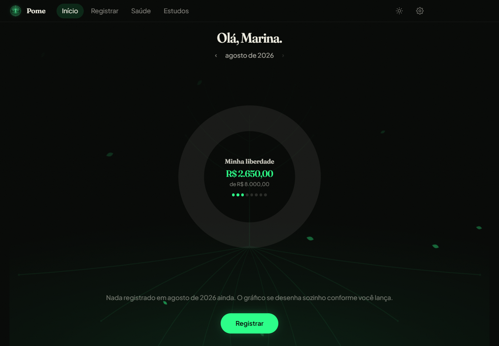
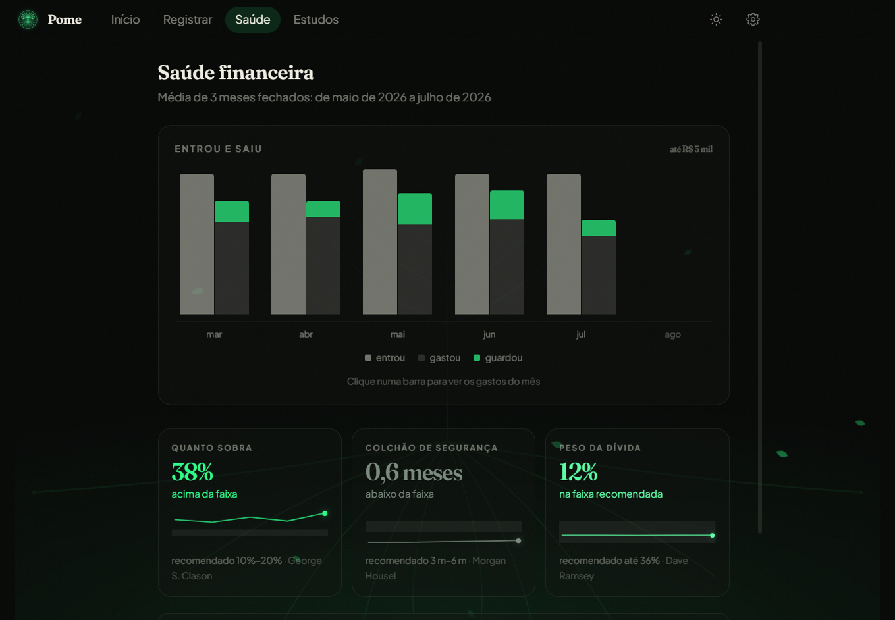

Propósito primeiro
O app começa perguntando qual é o sonho, não quanto você ganha. A meta ganha nome — "intercâmbio", "carro", "sair do aluguel" — e é ela que fica no centro da tela inicial.
Número existe para servir ao sonho, não o contrário.
O Pome organiza o seu dinheiro em volta de uma meta que tem nome — e não em volta de uma planilha.
Grátis Windows 10 e 11 Sem cadastro 98 MB
O Windows vai avisar que não conhece este programa. Isso acontece porque o instalador ainda não tem certificado de assinatura — não porque haja algo de errado com ele. Para instalar mesmo assim: Mais informações → Executar assim mesmo. Se quiser conferir que o arquivo é o mesmo que publicamos, o SHA-256 é —


O Pome rodando no Windows. Ainda não existe versão para celular.
O que é
Você registra o que entra e o que sai, e o Pome mostra para onde o seu dinheiro está indo — sempre ao lado do sonho que você mesmo nomeou.
O app começa perguntando qual é o sonho, não quanto você ganha. A meta ganha nome — "intercâmbio", "carro", "sair do aluguel" — e é ela que fica no centro da tela inicial.
Número existe para servir ao sonho, não o contrário.
O material de estudo cobre o que costuma custar caro por desconhecimento: teto do rotativo, Custo Efetivo Total, portabilidade de dívida, direito de arrependimento em sete dias e a Lei do Superendividamento.
Texto de lei é público, e está citado com a fonte.
Os princípios que aparecem no app vêm de educadores financeiros reais, parafraseados e sempre com autor e obra indicados.
Nenhuma frase inventada e atribuída a ninguém. Nenhum desses autores tem relação com o Pome.
Seus dados são seus
Não é promessa de política de privacidade: é como o app foi construído. Ele não tem para onde enviar.
Antes de baixar
O Pome não recomenda investimento e não substitui profissional habilitado. Nenhuma tela dele deve ser lida como indicação de onde aplicar dinheiro.
Os indicadores de saúde financeira são calculados a partir do que você mesmo registrou, e existem para explicar a sua situação — não para atestá-la. Não há nota, pontuação nem selo.
O Pome está na versão 0.1.0, para Windows. Coisas vão mudar, e o app avisa quando os documentos mudarem — o aceite anterior deixa de valer e ele pergunta de novo.